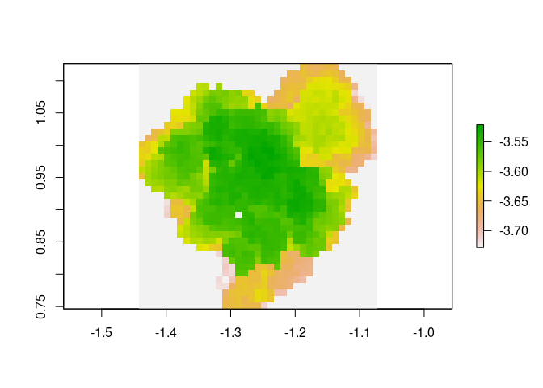
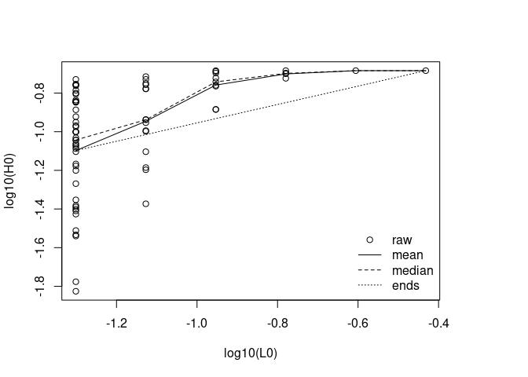

The goal of habtools is to collate tools for 3D meshes and digital elevation models (DEM) targeted at biologists and ecologists. Tools calculate metrics like surface area, rugosity, fractal dimension, height range, convexity, sphericity, second moments of volume and more. The initial set of tools came from two research papers. Zawada et al. (2019) examined morphology of coral colony laser scans. Torres-Pulliza et al. (2020) examined complexity of coral reef structure. It is hoped that the number of tools and contributors will grow through time.
Installation
You can install the development version from GitHub with:
# install.packages("devtools")
devtools::install_github("jmadinlab/habtools")Examples
There are currently two data set accompanying this package. horseshoe is a digital elevation model of a reef, and mcap is a 3D mesh of a coral growing on a reef.
The following example calculates height range, rugosity and fractal dimension of a 2 x 2 m plot of reef using the height range method developed in Torres-Pulliza et al. (2020).
library(habtools)
#> Loading required package: raster
#> Loading required package: sp
#> Warning: multiple methods tables found for 'direction'
#> Loading required package: rgl
plot(horseshoe)
# height range
hr(horseshoe, x=-470, y=1266, L=2, plot=TRUE)
#> [1] 1.091781
# rugosity; note that rugosity will increase with grain (L0)
rg(horseshoe, x=-470, y=1266, L=2, L0=0.25, plot=TRUE)
#> [1] 1.398074
# fractal dimension is broken into two parts
# 1. Collate height variation in grids of different resolutions
hts <- hvar(horseshoe, x=-470, y=1266, L=2, L0 = 0.25)
# 2. Use the height variation data to calculate fractal dimension
fd(hts)
#> [1] 2.280339
# Here is the log-log plot with various `methods` superimposed
fd(hts, plot=TRUE)
#> [1] 2.280339The next example calculates height range, rugosity and fractal dimension for a 3D mesh of a coral colony. Because meshes can have more than one z coordinate for a given xy (i.e., they have overhangs), we use the cube counting fractal dimension method developed in Zawada et al. (2019).
# height range
hr(mcap, method="mesh")
#> [1] 0.2185397
# fractal dimension
cubes(mcap, L0 = 0.05, plot=TRUE)
#> $cubes
#> L0 n
#> 1 0.04793157 156
#> 2 0.07988596 67
#> 3 0.11982893 29
#> 4 0.23965787 8
#> 5 0.47931573 1
#>
#> $fd
#> [1] 2.162709You can use the mesh_to_dem function and now compare fractal dimension calculated with the two methods. Note that we expect these to be somewhat different is only because DEMs do not include overhangs (i.e., they have one z per xy pair; or as some people say, they are 2.5D, not 3D).
dem <- mesh_to_dem(mcap, res = 0.01)
plot(dem)
L <- min(dim(dem)[c(1,2)]) * res(dem)[1]
hts <- hvar(dem, x = xmin(dem), y = ymin(dem), L = L, L0 = 0.05)
fd(hts, plot = TRUE)
#> [1] 2.521731